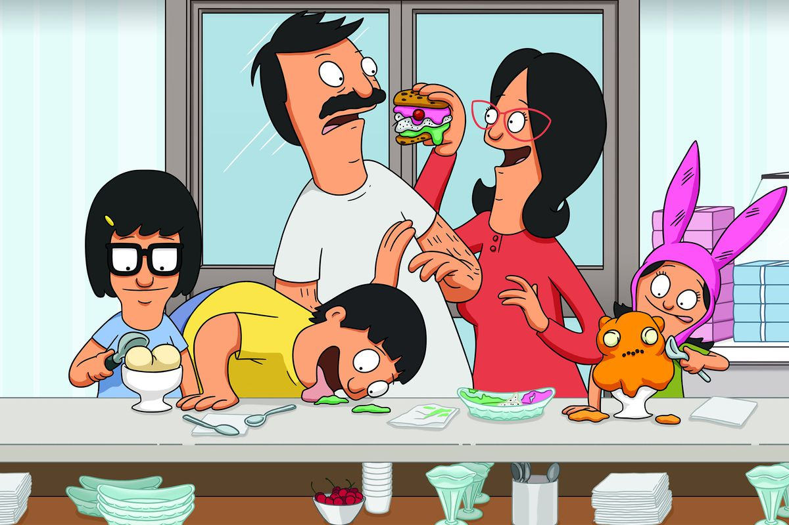

About
Louise Belcher is the youngest member of the Belcher family in Bob's Burgers. She is nine years old and in the fourth grade. Despite being the youngest member of the family, she has been shown many times to be smarter than her older siblings, Tina and Gene.
Characteristics
- She is almost never seen without wearing her trademark pink rabbit ear hat.
- Louise is an evil genius.
- She's deviously clever, and exceptionally smart.
- She is extremely sarcastic.
Family
The Belcher's, from left to right, Tina, Gene, Bob, Linda and Louise